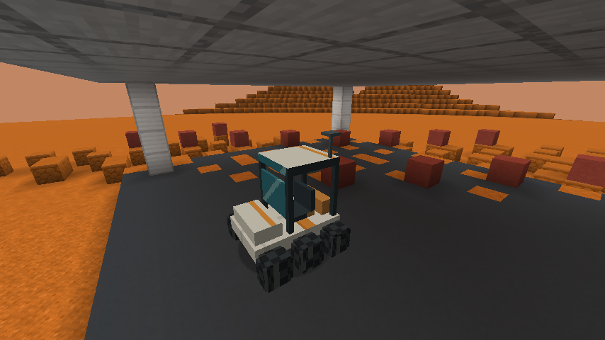
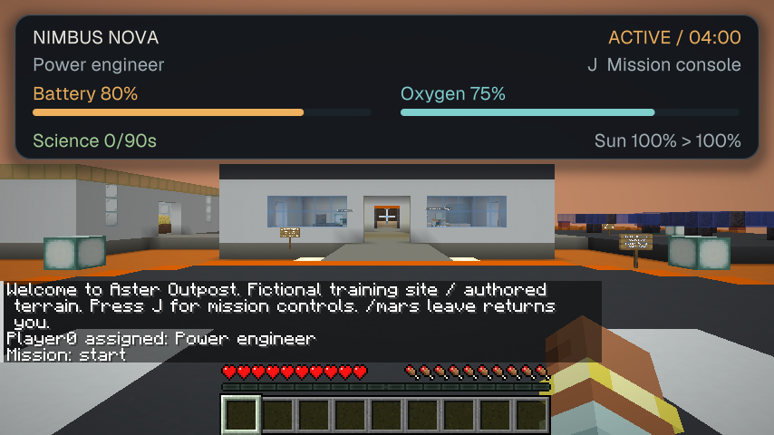
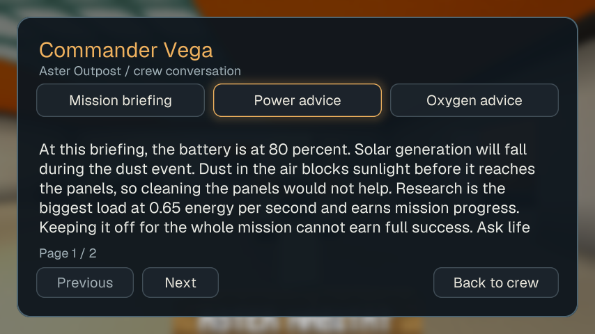
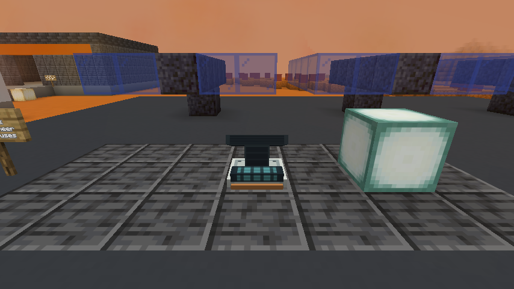

Power engineer
- Sees
- Battery and energy balance
- Controls
- Research, the biggest load at 0.65 energy per second
A Minecraft Mars outpost where a crew of kids aged 7 to 12 keeps the base alive through dust storms that NASA's Opportunity rover really lived through. Every switch costs something, and nobody on the crew can see everything alone.

Each mission picks one of two storms that Opportunity sat through. The drop in solar energy it reported to Earth sets how much power the outpost's panels make at the worst point of the storm.
Percent of clear-sky sunlight, mission time in minutes
The crew has to survive with battery and oxygen above zero and still finish 90 seconds of research. Switching research off saves power but stops the science.
A how-to-play checklist ticks itself off as each player opens the console and chooses a job.
Fifteen seconds to reach the crew shelter. Anyone outside from 00:40 to 01:05 adds to a shared radiation dose, and there are no consoles inside.
Only the weather officer can see how fast. The rest of the crew has to ask.
3% or 18% of normal sunlight, depending on which real storm the mission drew.
Switch everything back on too early and the battery still runs out.
Every console opens on what happened: lowest reserves, when research was cut, time outside the shelter, and what really happened to Opportunity.



The game is a simplified model. These are the values that come from NASA, and the ones we chose so the mission plays well.
| Value | In the game | Source | Kind |
|---|---|---|---|
| Opportunity, June 2018 | 645 → 21 Wh (3%) | NASA Science, On Mars, Light Is Energy | Measured |
| Opportunity, July 2007 | 700 → 128 Wh (18%) | NASA JPL, Mars Rovers Braving Severe Dust Storms | Measured |
| Solar particle event, Sept 2017 | Shelter alert | NASA JPL, surface radiation more than doubled at Curiosity | Event |
| Ten days of dimming | 60 seconds | Time compression | Game |
| Battery, oxygen, energy rates | Game units | Chosen for balance and tested | Game |
| Radiation dose | 5% per crew-second | No real dose in sieverts | Game |